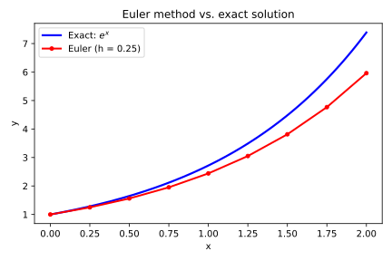
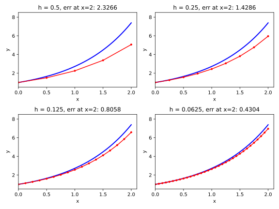

import numpy as np
import matplotlib.pyplot as plt
def f(x, y):
return y
def exact_solution(x):
return np.exp(x)
x0 = 0.0; y0 = 1.0; x_end = 2.0
def euler_step(fx, x, y, h):
return y + h * fx(x, y)
def euler_method(fx, x0, y0, x_end, h):
xs = [x0]; ys = [y0]
while xs[-1] < x_end - h/2:
ys.append(euler_step(fx, xs[-1], ys[-1], h))
xs.append(xs[-1] + h)
return np.array(xs), np.array(ys)
xs_h, ys_h = euler_method(f, x0, y0, x_end, 0.25)
xc = np.linspace(0, 2, 200)
fig, ax = plt.subplots(figsize=(6, 4))
ax.plot(xc, np.exp(xc), color='blue', linewidth=2.2, label='Exact: $e^x$')
ax.plot(xs_h, ys_h, color='red', linewidth=2, marker='o', markersize=4,
label='Euler (h = 0.25)')
ax.set_xlabel('x'); ax.set_ylabel('y')
ax.set_title('Euler method vs. exact solution')
ax.legend()
fig.tight_layout()
fig.savefig("04_RK1_Eulers_Method/euler-vs-exact.pdf")
fig.savefig("04_RK1_Eulers_Method/euler-vs-exact.svg")
plt.close(fig)4 Euler’s Method — Runge-Kutta Order 1
Every Runge–Kutta method, from the simplest to the most elaborate, is a recipe of the same form: take a weighted sum of slope estimates, multiply by the step size, and add the result to the current value. Euler’s method is the degenerate case of that recipe — one slope estimate, weight one. Deriving it carefully from the Taylor series accomplishes three things at once: we see exactly where the formula comes from, we measure how much error one step introduces, and we establish the pattern that every subsequent chapter will refine.
4.1 The Unifying Structure: A Weighted Sum of Slopes
Before deriving anything, we name the pattern that connects Euler’s method to every Runge–Kutta method in this book. Every RK method advances the solution from \(x_n\) to \(x_{n+1} = x_n + h\) by exactly one formula:
\[y_{n+1} = y_n + h\, \sum_{i=1}^{s} b_i\, k_i\]
Here \(s\) is the number of stages — the number of times the right-hand side \(f\) is evaluated per step. The \(b_i\) are weights (they must sum to 1). Each \(k_i\) is a slope estimate: a value of \(f\) computed at some point near \((x_n, y_n)\). Different choices of \(s\), the weights \(b_i\), and where the \(k_i\) are sampled produce different RK methods with different orders of accuracy. The conditions the coefficients must satisfy are what each chapter derives from the Taylor series.
For Euler’s method the answer is immediate: \(s = 1\), \(b_1 = 1\), and \(k_1 = f(x_n, y_n)\) — the slope at the current point. Substituting into the unifying formula gives the Euler step:
\[y_{n+1} = y_n + h\, f(x_n, y_n)\]
This formula will reappear in Section 4.3 as the direct output of a Taylor expansion — derived, not assumed. Seeing it here first means the algebra in Section 4.3 produces a result you already recognize.
4.2 The Geometric Idea: Following the Slope
The solution curve \(y(x)\) passes through the initial point \((x_0, y_0)\). We do not know the curve, but the ODE tells us its slope at that point: \(y'(x_0) = f(x_0, y_0)\). The tangent line at \((x_0, y_0)\) has that slope. Euler’s method says: walk along the tangent line for one step of width \(h\), then stop. The endpoint of that walk is \(y_1\).
At \((x_1, y_1)\) the ODE supplies a new slope — \(f(x_1, y_1)\) — and we repeat. Each step follows the tangent line at the current approximate point. Because a tangent line is only a first-order approximation to the curve, the solution drifts away from the truth, but for small \(h\) the drift is slow. The plot below shows what this looks like on our benchmark problem \(y' = y\), \(y(0) = 1\), whose exact solution is \(e^x\).

The red polyline is the Euler approximation; the blue curve is the exact solution. Each segment of the polyline is one tangent-line step. Notice that the approximation consistently falls below the exact curve: the exact solution is concave up (\(y'' = e^x > 0\)), so the tangent line always undershoots. Section 4.6 will show, side by side, how the error shrinks as \(h\) decreases.
4.3 Deriving Euler’s Method from the Taylor Series in Python
Chapter 3 established that every RK derivation is a Taylor expansion in the step size \(h\). We apply that idea directly: expand \(y(x + h)\) as a power series around \(h = 0\), use the ODE to eliminate \(y'(x)\), and truncate. The result is the Euler formula. The full Taylor series is:
\[y(x + h) = y(x) + h\, y'(x) + \frac{h^2}{2}\, y''(x) + O(h^3)\]
We ask SymPy’s series() to produce this expansion. We treat \(y\) as an unspecified smooth function — SymPy will keep \(y'(x)\) as a formal derivative because it does not yet know the ODE:
import sympy as sp
x_s, h_s = sp.symbols('x h')
y_func = sp.Function('y')
sp.series(y_func(x_s + h_s), h_s, 0, 2)\(\displaystyle y{\left(x \right)} + h \left. \frac{d}{d \xi_{1}} y{\left(\xi_{1} \right)} \right|_{\substack{ \xi_{1}=x }} + O\left(h^{2}\right)\)
The output is y(x) + h*Subs(Derivative(y(_xi_1), _xi_1), _xi_1, x) + O(h^2), which is SymPy’s way of writing \(y(x) + h\, y'(x) + O(h^2)\). Now we supply the ODE. The rule \(y' = f(x, y)\) tells us \(y'(x)\) should be replaced by \(f(x, y(x))\). We strip the \(O(\cdot)\) remainder, then substitute the formal derivative with \(f(x, y(x))\):
f_sym = sp.Function('f')
expansion = sp.series(y_func(x_s + h_s), h_s, 0, 2).removeO()
yprime = y_func(x_s).diff(x_s)
expansion.subs(yprime, f_sym(x_s, y_func(x_s)))\(\displaystyle h \left. \frac{d}{d \xi_{1}} y{\left(\xi_{1} \right)} \right|_{\substack{ \xi_{1}=x }} + y{\left(x \right)}\)
The output is y(x) + h*f(x, y(x)). Translating the continuous notation to the discrete stepping notation — \(x\) becomes \(x_n\), \(y(x)\) becomes \(y_n\), and \(y(x + h)\) becomes \(y_{n+1}\) — gives exactly the Euler formula from Section 4.1:
\[y_{n+1} = y_n + h\, f(x_n, y_n)\]
This formula was not assumed — it fell out of the Taylor series when we kept only the \(O(h)\) term and used the ODE to replace \(y'(x_n)\). The term we discarded, starting at \(\tfrac{h^2}{2}\, y''(x_n)\), is the local truncation error. Section 4.4 measures it precisely.
4.4 Local Truncation Error: How Much We Lose Each Step
The local truncation error (LTE) is the gap between the exact value \(y(x_n + h)\) and the Euler approximation \(y_{n+1}\), measured in one isolated step that starts from an exact value of \(y_n\). It quantifies how much a single step departs from the truth before errors begin to interact.
We already have both quantities. The exact value is the full Taylor series; the Euler value keeps only the first two terms. The LTE is everything we dropped. We ask SymPy to expand to one order higher to make the dropped term visible:
sp.series(y_func(x_s + h_s), h_s, 0, 3)\(\displaystyle y{\left(x \right)} + h \left. \frac{d}{d \xi_{1}} y{\left(\xi_{1} \right)} \right|_{\substack{ \xi_{1}=x }} + \frac{h^{2} \left. \frac{d^{2}}{d \xi_{1}^{2}} y{\left(\xi_{1} \right)} \right|_{\substack{ \xi_{1}=x }}}{2} + O\left(h^{3}\right)\)
The output includes the term \(\tfrac{h^2}{2}\, y''(x)\). That is the leading term of the LTE. Since \(y''(x_n)\) does not depend on \(h\) (it is determined by the ODE and the exact solution at \(x_n\)), the \(h^2\) factor tells us the LTE is \(O(h^2)\):
\[\text{LTE} = \frac{h^2}{2}\, y''(x_n) + O(h^3)\]
For the benchmark \(y' = y\) we have \(y''(x) = e^x\), which is positive on the whole interval \([0, 2]\). That is why the Euler approximation always undershoots: the LTE is always positive. Halving \(h\) reduces the LTE by a factor of four. This is a local statement about one isolated step. The next section asks what happens when we chain many steps together.
4.5 Global Error: How Mistakes Accumulate
The global error is the total deviation from the exact solution after integrating from \(x_0\) to \(x_\text{end}\). We take \(N = (x_\text{end} - x_0) / h\) steps, so \(N\) grows as \(h\) shrinks. A rough but instructive argument: if each step introduces an LTE of order \(h^2\) and the errors accumulate additively, the total is proportional to \(N\) times the LTE per step.
\[\text{Global Error} \approx N \cdot \text{LTE} = \frac{x_\text{end} - x_0}{h} \cdot O(h^2) = O(h)\]
One power of \(h\) in the numerator of LTE cancels the \(1/h\) from the step count, and the interval length \((x_\text{end} - x_0)\) is a fixed constant. The result is a global error proportional to \(h\). Halving \(h\) halves the global error — but it also doubles the number of steps, so the computation doubles. Euler’s method is therefore a first-order method.
Critical distinction: LTE is \(O(h^2)\) per step, but global error is \(O(h)\). A method’s order is defined by its global error, not its LTE. A reader who sees the \(h^2\) in the LTE and concludes the method is second order is making a common mistake. The order drops by one because the error accumulation over \(N = O(1/h)\) steps costs us one power of \(h\).
4.6 A Worked Example: Numerical vs. Exact Solution
We apply Euler’s method to the benchmark IVP from Chapter 2: \(y' = y\), \(y(0) = 1\), exact solution \(y(x) = e^x\), integrated over \([0, 2]\). We reload the definitions so this notebook runs independently.
import numpy as np
def f(x, y):
return y
def exact_solution(x):
return np.exp(x)
x0 = 0.0; y0 = 1.0; x_end = 2.0euler_step translates the Euler formula directly. It takes the slope function fx, the current position x, the current value y, and the step size h, and returns the next value:
def euler_step(fx, x, y, h):
return y + h * fx(x, y)euler_method chains euler_step from \(x_0\) to \(x_\text{end}\) and collects all solution points. The internal lists xs and ys are local to the function so they do not pollute the global namespace. The while loop stops when the current \(x\) reaches \(x_\text{end}\) to within half a step, which avoids floating-point overshoot:
def euler_method(fx, x0, y0, x_end, h):
xs = [x0]; ys = [y0]
while xs[-1] < x_end - h/2:
ys.append(euler_step(fx, xs[-1], ys[-1], h))
xs.append(xs[-1] + h)
return np.array(xs), np.array(ys)We run the method with step size \(h = 0.25\) and compare the Euler value at \(x = 2\) to the exact answer \(e^2 \approx 7.389\):
import pandas as pd
xs_e, ys_e = euler_method(f, x0, y0, x_end, 0.25)
y_euler = ys_e[-1]
pd.DataFrame({
"Euler y(2)": [y_euler],
"Exact y(2)": [np.exp(2)],
"Absolute error": [abs(y_euler - np.exp(2))]
})| Euler y(2) | Exact y(2) | Absolute error | |
|---|---|---|---|
| 0 | 5.960464 | 7.389056 | 1.428592 |
4.7 Visualizing the Error as Step Size Changes
The figure below shows Euler approximations at four step sizes overlaid on the exact solution. Two things to watch: how the red polyline approaches the blue exact curve as \(h\) decreases, and how the absolute error at \(x = 2\) shrinks. If global error is truly \(O(h)\), halving \(h\) should halve the error.
import numpy as np
import matplotlib.pyplot as plt
h_panels = [0.5, 0.25, 0.125, 0.0625]
xc = np.linspace(0, 2, 400)
exact_curve = np.exp(xc)
fig, axes = plt.subplots(2, 2, figsize=(8, 6))
for ax, hp in zip(axes.flat, h_panels):
xs_p, ys_p = euler_method(f, 0, 1, 2, hp)
err = abs(ys_p[-1] - np.exp(2))
ax.plot(xc, exact_curve, color='blue', linewidth=2)
ax.plot(xs_p, ys_p, color='red', linewidth=1.5, marker='o', markersize=3)
ax.set_xlim(0, 2.1); ax.set_ylim(0.5, 8.5)
ax.set_xlabel('x'); ax.set_ylabel('y')
ax.set_title(f'h = {hp}, err at x=2: {err:.4f}')
fig.tight_layout()
fig.savefig("04_RK1_Eulers_Method/euler-h-grid.pdf")
fig.savefig("04_RK1_Eulers_Method/euler-h-grid.svg")
plt.close(fig)
To see the \(O(h)\) convergence numerically, we compute the error at \(x = 2\) for a sequence of step sizes, each half the previous. A first-order method produces error ratios near \(0.5\) each time \(h\) is halved:
import numpy as np
import pandas as pd
h_values = [0.5, 0.25, 0.125, 0.0625, 0.03125]
errors = [abs(euler_method(f, 0, 1, 2, hv)[1][-1] - np.exp(2))
for hv in h_values]
ratios = ["---"] + [f"{errors[i]/errors[i-1]:.4f}"
for i in range(1, len(errors))]
pd.DataFrame({
"h": h_values,
"Error at x=2": [f"{e:.4e}" for e in errors],
"Ratio": ratios,
})| h | Error at x=2 | Ratio | |
|---|---|---|---|
| 0 | 0.50000 | 2.3266e+00 | --- |
| 1 | 0.25000 | 1.4286e+00 | 0.6140 |
| 2 | 0.12500 | 8.0581e-01 | 0.5641 |
| 3 | 0.06250 | 4.3039e-01 | 0.5341 |
| 4 | 0.03125 | 2.2278e-01 | 0.5176 |
The Ratio column should be close to \(0.5\) at every row, confirming that the global error is proportional to \(h\). The values will not be exactly \(0.5\) because the constant hidden in the \(O(h)\) notation depends on the specific problem, but the convergence is clear. Chapter 8 will plot the same data on a log-log scale, where first-order convergence appears as a straight line of slope 1.
4.8 The Limitations That Motivate Everything That Follows
Euler’s method is first-order: halving \(h\) halves the global error and doubles the work. To reduce the error by a factor of 100 we need 100 times as many steps. On smooth problems over short intervals this is merely slow; on stiff problems or long-time integrations it can be completely impractical.
The deeper issue is structural: Euler uses only the slope at the left endpoint of each interval. That slope is the best first-order estimate of the average slope over \([x_n, x_{n+1}]\), but it is only that. The exact average slope over the interval is what we would need to advance the solution without error. Euler approximates the average with a single sample; every higher-order method improves that approximation by sampling at more points inside the interval.
This is the idea behind Runge–Kutta order 2. Instead of one slope estimate at the left endpoint, RK2 uses two estimates — one at the left endpoint and one near the midpoint or right endpoint — and takes a weighted average. The weights must satisfy conditions derived from the same Taylor expansion we just used. Chapter 5 derives those conditions, finds that they admit a whole family of solutions, and implements two of them: the Midpoint Method and Heun’s Method.